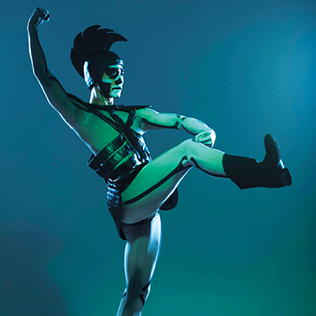
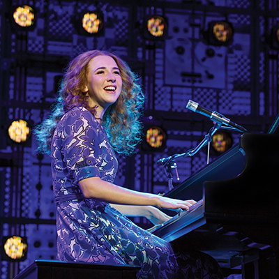

Stage presence
Your guide to the best in performing arts this fall

Song and dance, drama and intrigue, laughter, and show-stopping spectacle. Green Country’s performing arts companies and venues offer all this and more in the coming months. Don’t miss out on the enchantment.
Every Saturday
The Drunkard and The Olio
Since 1953, more than 3,000 Tulsa Spotlighters have helped produce the melodrama/temperance morality play, “The Drunkard,” which is the longest-running play in the country.
Spotlight Theatre
8/18–27
Nunsense
The Little Sisters of Hoboken discover their cook, Sister Julia, Child of God, has accidentally poisoned 52 of their sisters.
Sapulpa Community Theatre
8/18–9/3
Ragtime
Based on the 1975 novel by E. L. Doctorow, “Ragtime” tells the story of three groups in New York in the early 20th century: African Americans, upper-class suburbanites, and Eastern European immigrants.
John H. Williams Theatre, Tulsa Performing Arts Center
Theatre Tulsa
8/24–26
Exchange Choreography Festival
Modern dance makers from around the region come together for professional development and performances.
Holland Hall’s Walter Arts Center
The Bell House
 8/29–9/3
8/29–9/3
The Little Mermaid
“The Little Mermaid,” based on the 1989 Disney film and story by Hans Christian Andersen, splashes onstage at the Tulsa Performing Arts Center, August 29–September 3. This Broadway tour is intended for the whole family, with colorful costumes, lavish set design, and music by eight-time Academy Award-winner Alan Menken, including “Under the Sea,” “Part of Your World,” and “Kiss the Girl,” plus new songs.
One of the early challenges of production was figuring out how to achieve an oceanic set on a dry stage. Director Francesca Zambello stayed truthful to the story and created “something that was very simple in terms of the set, very translucent, takes light beautifully and is architectural and sculptural to suggest an underwater world without actually being in real water or having people swimming,” she said.
In Zambello’s aquatic jewel-box, Ariel (Diana Huey) and Sebastian the Crab (Melvin Abston) sing and swim through several twists added to the theatrical version. Playwright Doug Wright (“I Am My Own Wife,” pg. 24) focused Ariel’s story on “a world in which she feels truly realized in her own terms … her ambitions are bigger than any one man.”
Chapman Music Hall, Tulsa Performing Arts Center
Celebrity Attractions
9/7–9
Blue Whale Comedy Festival
Eugene Mirman, Kyle Kinane, Jordan Rock, The Sklar Brothers, Naomi Ekperigin, Liza Treyger, and a whole host of locals perform throughout the weekend.
The Brady Arts District
9/8
Calidore String Quartet
The quartet performs Janácek’s “Kreutzer Sonata,” Caroline Shaw’s “First Essay: Nimrod,” and Tchaikovsky’s Quartet No. 1in D Major, Op. 11.
Harwelden Mansion
Chamber Music Tulsa
9/8
The Roaring ‘20s and All That Jazz
Signature Symphony plays hot jazz by the likes of Jelly Roll Morton, Bessie Smith, and Louis Armstrong.
VanTrease PACE
Signature Symphony
9/8–17
Mr. Burns, a Post-Electric Play
“Mr. Burns: A Post-Electric Play” opens with a group of survivors in the wake of an apocalyptic disaster. Alone in the woods, they piece together the plot of The Simpsons episode “Cape Feare” from memory. Over three acts, “Mr. Burns” shows how this version of The Simpsons and other snippets of pop culture (commercials, jingles, pop songs, etc.) become the foundation for a new cultural mythology.
“It shows how media changes the way we view things over time, and how time changes the way we view those things,” director Meghan Hurley said.
“Donald Trump isn’t the first president we’ve had who was famous for something other than politics before he was elected,” she added. “The current state of affairs shows how much media shapes our lives.”
“It also shows how in times of crisis people always turn to art. No matter what happens, the worst possible things happen, and people always turn back to art. It’s the thing that keeps us going,” Hurley said. “You can turn tragedy into something that becomes a form of art.”
IDL Ballroom
Theatre Pops
9/9
Jwala: Rising Flame
This performance by choreographer Mythili Prakash envisions a flickering flame as a symbol of life and spirit.
John H. Williams Theatre, Tulsa Performing Arts Center
South Asian Performing Arts Foundation
9/9–10
Calidore String Quartet
The quartet performs pieces by Tchaikovsky, Haydn, Hindemith, and Mendelssohn.
Westby Pavilion, Tulsa Performing Arts Center
Chamber Music Tulsa
9/13–24
I Am My Own Wife
Based on the life of “Berlin’s favorite transvestite” Charlotte von Mahlsdorf, “I Am My Own Wife” is first and foremost a survival story.
Doug Wright wrote the script after lengthy conversations he had with Mahlsdorf, then 65, in the early 1990s. “I Am My Own Wife” premiered in Chicago in 2002 and, after the Broadway production in 2004, earned Wright a Pulitzer Prize. Wright is also known for the American-British-German period film “Quills” and Disney’s “The Little Mermaid” (pg. 22) on Broadway.
“She was a living history lesson, this woman,” said Lyric Theatre of Oklahoma Artistic Director Michael Baron, who is directing the Tulsa show. “There’s not many people that survived the Nazis and the East Germans and came out of the other side of the [Berlin] Wall intact.”
Matthew Alvin Brown, Tulsa Project Theatre’s artistic director, stars in the role of Mahlsdorf. He also plays 30 other characters, including SS officers, Mahlsdorf’s lesbian aunt, and even the playwright—all with the perfect amount of comic relief for a true story about a transwoman dodging the Gestapo and Stasi.
Charles E. Norman Theatre, Tulsa Performing Arts Center
Tulsa Project Theatre
9/15
Ron White
“Tater Salad” returns to Tulsa for an evening of his signature cigar-smoking, scotch-drinking comedy.
Paradise Cove, River Spirit Casino
9/15
Captain Mark Kelly Luncheon
Cpt. Kelly, who commanded the space shuttles Endeavour and Discovery, presents his lecture, “To Infinity and Beyond.”
Chapman Music Hall, Tulsa Performing Arts Center
Tulsa Town Hall
9/15–24
Creations in Studio K
The annual tradition brings world premiere works commissioned just for Tulsa Ballet by in-demand choreographers Helen Pickett, Annabelle Lopez Ochoa, and Young Soon Hue.
Studio K
Tulsa Ballet
9/16
Gala Concert with Jon Kimura Parker
The pianist will perform Bartok’s Miraculous Mandarin Suite and Brahms’ Piano Concerto No. 2, and Hungarian Dances No. 1 and No. 5 with Tulsa Symphony.
Chapman Music Hall, Tulsa Performing Arts Center
Tulsa Symphony
9/16
Darren Knight’s Southern Momma
The social media star performs as his signature character, a hysterical Southern mother.
The Joint, Hard Rock Hotel & Casino
9/19
Chita Rivera & Tommy Tune: Two for the Road
Two Tony-winning Broadway legends perform show-stopping hits.
Broken Arrow Performing Arts Center
9/21–10/1
Grease
The original high school musical, starring Rydell High’s Class of 1959.
Henthorne Performing Arts Center
Clark Youth Theatre
9/22
Chris Botti
The grammy-nominated jazz and pop trumpeter and composer performs.
Chapman Music Hall, Tulsa Performing Arts Center
35 Concerts
9/22–30
The Bad Seed
Through a series of events, Christine begins to believe her daughter, the seemingly perfect Rhoda, may in fact be
a serial killer.
Muskogee Little Theatre
9/22–10/1
Green Day’s American Idiot
Fed-up suburban youths struggle to find their place in a superficial society in this rock opera based on the pop-punk band’s Grammy-winning album.
John H. Williams Theatre, Tulsa Performing Arts Center
Theatre Tulsa Next Stage
9/23
Family Portraits
Signature Symphony performs Peter Boyer’s “New Beginnings,” Prokofiev’s “Piano Concerto,” and Edward Elgar’s Enigma Variations with featured pianist Horacio Gutierrez.
VanTrease PACE
Signature Symphony
9/26–10/1
The Bodyguard
Based on the smash hit movie, a superstar and her bodyguard unexpectedly fall for each other. Starring Canadian R&B singer Deborah Cox.
Chapman Music Hall, Tulsa Performing Arts Center
Celebrity Attractions
10/6
How I Became a Pirate
Young Jeremy Jacobs joins Captain Braid Beard’s band of comical pirates in this swashbuckling musical.
John H. Williams Theatre, Tulsa Performing Arts Center
PAC Trust
10/6–14
Time for Chocolate
This play, by TU Professor of Spanish and Comparative Literature Bruce Dean Willis is inspired by an ancient Mexican ritual known as “flower song.”
Nightingale Theater
Heller Theatre Company and Tulsa Latino Theatre Company
10/6–15
The Mousetrap
A group of strangers is stranded in a boarding house during a snowstorm in this mystery by Agatha Christie.
Broken Arrow Community Playhouse
10/13–14
TU Dance
Founded by former Alvin Ailey principal dancers Toni Pierce-Sands and Uri Sands, the company is acclaimed for its versatility, drawing together modern dance, classical ballet, and African-based and urban vernacular movements.
John H. Williams Theatre, Tulsa Performing Arts Center
Choregus Productions
10/13–22
The Adventures of Rikki Tikki Tavi
The adventures of a valiant young mongoose, as told by Rudyard Kipling in a short story in “The Jungle Book.”
Spotlight Theatre
Spotlight Children’s Theatre
10/14
Danish String Quartet
The quartet performs Beethoven’s Quartet in D Major, Op. 18, No. 3.
Westby Pavilion, Tulsa Performing Arts Center
Chamber Music Tulsa
10/15
Danish String Quartet
The quartet performs Haydn’s Quartet in C Major, Op. 20, No. 2, Schnittke’s Quartet No. 3 (1983), and Beethoven’s Quartet in F Major, Op. 59, No. 1, “Rasumovsky.”
John H. Williams Theatre, Tulsa Performing Arts Center
Chamber Music Tulsa
10/20
Music of the Knights
Signature Symphony honors the musical legacies of Sir Andrew Lloyd Weber, Sir Elton John, and Sir Paul McCartney.
VanTrease PACE
Signature Symphony
10/20, 22
Faust
For Faust, neither science nor faith proved to be paths to love. The longing scholar trades his soul to the devil Méphistophélès, hoping to gain a new vitality that will help him win the affections of innocent Marguerite.
Of all the interpretations of Johann Wolfgang von Goethe’s “Faust,” Charles Gounod’s operatic interpretation is perhaps the grandest. Tulsa Opera will bring Gounod’s “Faust” to the stage on Friday, October 20, with a Sunday matinee on October 22. Performances will be sung in French with English translations above the stage.
Audiences will make the descent along with Faust, in a swirl of voices and tumult. It’s not Méphistophélès’ temptation that breaks Faust in the end, but Faust’s desire for power and grandeur.
Stage designs are by Earl Staley, who painted the lush and vibrant sets in 1985, and direction is by the young Israeli Omer Ben Seadia. This modern production revitalizes “Faust” at a time when one’s desires should be compared to desires’ effects.
Chapman Music Hall, Tulsa Performing Arts Center
Tulsa Opera
10/21
Betty Buckley
The 2012 Theatre Hall of Fame inductee performs a revue of Broadway classics.
Broken Arrow Performing Arts Center
10/21–28
Fun Home
A middle-aged cartoonist looks back on two time periods in her life in this musical, the winner of the 2015 Tony Award for Best Musical.
John H. Williams Theatre, Tulsa Performing Arts Center
American Theatre Company
10/27
Dr. Bennet Omalu Luncheon
Dr. Omalu, the first doctor to discover and publish findings of chronic traumatic encephalopathy in American football players, speaks about his experience.
Chapman Music Hall, Tulsa Performing Arts Center
Tulsa Town Hall
10/28
Tchaikovsky’s Symphony No. 6
Tulsa Symphony performs Tchaikovsky’s “Pathétique,” Aaron Copland’s “Quiet City,” and Hindemith’s Symphonic Metamorphosis of Themes by Carl Maria von Weber.
Chapman Music Hall, Tulsa Performing Arts Center
Tulsa Symphony
11/3–4
Don Quixote
Don Quixote and his sidekick Sancho Panza chase after the forbidden lovers, Kitri and Basilio.
Chapman Music Hall, Tulsa Performing Arts Center
Tulsa Ballet
11/3–11
Amadeus
Envious composer Antonio Salieri seeks to destroy his brilliant rival, Wolfgang Amadeus Mozart, by any means necessary.
John H. Williams Theatre, Tulsa Performing Arts Center
Theatre Tulsa
11/4
Yevtushenko and Shostakovich
Yevgeny Yevtushenko, the celebrated Russian poet and distinguished professor of literature at the University of Tulsa, died on April 1 of this year. To celebrate his life and legacy, Tulsa Signature Symphony will perform “The Execution of Stepan Razin” (1964), a collaborative work between the poet and Dimitri Shostakovich.
A follow-up to their 1962 collaboration that denounced antisemitism—Shostakovich’s Symphony No. 13, set to Yevtushenko’s libretto “Babi Yara” and five other poems—“Stepan Razin” looks further back in Russian history at the eponymous Cossack leader who was executed for leading an uprising against the Tsarist regime in 1671.
The Russian cantata for solo bass, male and female chorus, and orchestra, is both grand and brutal—an accurate depiction of a man beheaded for revolting against the Tsars. Yevtushenko will long be remembered for standing up to powerful leaders, fighting them with his words. This act of defiance is perfectly represented in “Stepan Razin,” as the entire chorus sings near the end: “Not for nothing! Not for nothing!”
Two other Russian works will be performed the same night: Glazunov’s “Stenka Razim” and Borodin’s “Prince Igor: Polovtsian Dances.”
VanTrease PACE
Signature Symphony
11/4
William Shatner: Shatner’s World
Shatner performs a larger-than-life one-man performance, with stories, jokes, and his unique musical style.
Broken Arrow Performing Arts Center
11/8
PJ Masks Live! Time to be a Hero
Three young friends transform into their dynamic alter egos, Catboy, Owlette, and Gekko, when they put on their pajamas and activate their animal amulets.
Chapman Music Hall, Tulsa Performing Arts Center
35 Concerts
11/9
Jack Hanna’s Into the Wild Live!
Zookeeper Jack Hanna comes to town with a cavalcade of critters.
Chapman Music Hall, Tulsa Performing Arts Center
Celebrity Attractions
11/10–12
Shades of White
Writer Ilan Kozlowski and Director Machele Dill know that Tulsa has dark secrets hidden in closets—and attics. Their next production, “Shades of White,” set in 1990s Tulsa, is a comedy about how a family confronts racism and reconciles events that stretch back to 1921 and before.
Dill said the play deals with racism not flippantly, but emphasizes hypocrisy, like when a character proclaims, “I can’t tolerate intolerance.”
As with many Echo Company productions, Dill hopes if people laugh about injustice they can become comfortable talking about it. That’s how, she believes, progress happens.
“Kozlowski wrote this so people would talk to each other on both sides of the fence,” Dill said.
Though all characters in the play are fictitious, some have traces of people who existed in Tulsa. Parental guidance is recommended, mostly for language. Dill recommends parents be prepared to talk about racism with their children after the show.
TU’s Tyrrell Hall
Echo Theatre Company
11/11
The Wizard of Oz
It takes an incredible journey through a strange world for Dorothy to realize, there’s no place like home.
Broken Arrow Performing Arts Center
11/11–12
Meccore Quartet
The quartet performs pieces by Szymanowski, Grieg, and Schumann.
Westby Pavilion, Tulsa Performing Arts Center
Chamber Music Tulsa
11/16–19
Martin Luther on Trial
Luther is tried for igniting the Protestant Revolt against Rome, with appearances by celebrity witnesses, including Sigmund Freud, Martin Luther King Jr., Hitler, and Lucifer.
John H. Williams Theatre, Tulsa Performing Arts Center
Fellowship for Performing Arts
11/18–19
Harry Potter and the Sorcerer’s Stone in Concert
Tulsa Symphony performs John Williams’s score for the first film in the Harry Potter series in its entirety.
Chapman Music Hall, Tulsa Performing Arts Center
Tulsa Symphony
11/28–12/3
Beautiful: The Carole King Story
The inspiring story of King’s rise to stardom, from being part of a hit songwriting team with her husband Gerry Goffin to becoming one of the most successful solo acts in pop music history.
Chapman Music Hall, Tulsa Performing Arts Center
Celebrity Attractions
11/30–12/10
The Best Christmas Pageant Ever
A tradition for 38 years, Clark Youth Theatre presents the story of the Herdmans, a non-churchgoing family who somehow ends up with the lead roles in the Christmas play.
Clark Youth Theatre
12/1–10
Hansel and Gretel
Two siblings meet a witch in the woods in the fairy tale by The Brothers Grimm.
Spotlight Theatre
Spotlight Childrens Theatre
12/1–10
It’s a Wonderful Life: A Live Radio Play
The classic film, stylized as an old-fashioned radio play—foley artist effects and all.
Sapulpa Community Theatre
12/7–10
Elton John and Tim Rice’s Aida: School Edition
An epic tale of love, loyalty, and betrayal set in Egypt, inspired by Verdi’s famous opera.
Liddy Doenges Theatre, Tulsa Performing Arts Center
Theatre Tulsa
12/8–17
A Christmas Carol
Ebenezer Scrooge et al return for Tulsa’s 40-year tradition.
John H. Williams Theatre, Tulsa Performing Arts Center
American Theatre Company
12/8–17
The Regifters
A couple find out the value of a gift they received when it’s too late: after they’ve regifted it.
Broken Arrow Community Playhouse
12/9
Christmas in Tulsa with Barry Epperley
A holiday tradition for more than 25 years, vocal and instrumental ensembles perform Christmas classics.
VanTrease PACE
Signature Symphony
12/9–22
The Nutcracker
More than 100 children join Tulsa Ballet to perform Tchaikovsky’s classic ballet.
Chapman Music Hall, Tulsa Performing Arts Center
Tulsa Ballet
12/10
Christmas with the Annie Moses Band
The acclaimed classical crossover family band performs stunning arrangements of holiday classics.
Broken Arrow Performing Arts Center
In other performing arts news …
Tulsa PAC welcomes Mark Frie
Mark W. Frie is the new director of the Tulsa Performing Arts Center, replacing director John Scott who retired on June 16 after 28 years of service. Frie, selected for the position by Mayor G.T. Bynum, will lead the day-to-day operations for the PAC and oversee its entertainment lineup and rental agreements.
“After our national search concluded, Mark was ultimately the perfect choice for Tulsa,” Bynum said. “He brings a track record of continual success and an ambitious vision. The future of the performing arts in Tulsa is bright with Mark in this crucial role.”
Prior to accepting the new position, Frie served as the executive director of the Broken Arrow Performing Arts Center for eight years and as the executive director of Fine Arts for the Broken Arrow School District. He is a licensed Certified Performing Arts Executive.
.jpg)
.jpg)